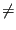

Next: Wear Up: Turbulent Flow in Open Previous: Turbulent Flow in Open Contents
Remember that a sluice gate can be used upstream of a channel, or somewhere in between a channel.
For a frontwater curve:

0 or hup 0. In the latter case the sluice gate must be somewhere in the middle of the channel and Q will be known. So Q is known at any rate and hup is determined based on Q and ha.For a backwater curve: